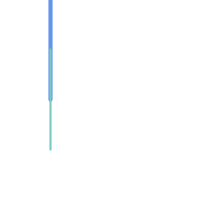
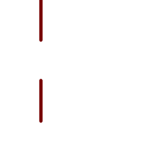

Name
ST_SymDifference — ジオメトリAとジオメトリBがインタセクトしていない部分を表現するジオメトリを返します。
Synopsis
geometry ST_SymDifference(geometry geomA, geometry geomB, float8 gridSize = -1);
説明
ジオメトリAとジオメトリBがインタセクトしていない部分を表現するジオメトリを返します。この関数は、ST_Union(A,B) - ST_Intersection(A,B)と同じです。SymDifference (対象差)と呼ばれるのはST_Union(A,B) - ST_Intersection(A,B)だからです。
任意引数gridSizeが与えらえれた場合には、入力は与えられた大きさのグリッドにスナップされ、結果の￥頂点は同じグリッド上で計算されます (GEOS-3.9.0以上が必要)。
GEOSモジュールで実現しています。
Enhanced: 3.1.0 gridSizeパラメータを受け付けるようになりました。
gridSizeパラメータを使うにはGEOS 3.9.0以上が必要です
 このメソッドはOGC Simple Features Implementation Specification for SQL 1.1の実装です。
このメソッドはOGC Simple Features Implementation Specification for SQL 1.1の実装です。
s2.1.1.3
このメソッドはSQL/MM仕様の実装です。
SQL-MM 3: 5.1.21
この関数は3次元に対応し、Z値を削除しません。
ただし、結果はXYのみを使用して計算されます。結果のZ値は複写するか、平均値になるか、補間されます。
例
|
 二つある元のラインストリングの両方
|
 二つのラインストリングの対称差
|
--Safe for 2d - symmetric difference of 2 linestrings
SELECT ST_AsText(
ST_SymDifference(
ST_GeomFromText('LINESTRING(50 100, 50 200)'),
ST_GeomFromText('LINESTRING(50 50, 50 150)')
)
);
st_astext
---------
MULTILINESTRING((50 150,50 200),(50 50,50 100))
--When used in 3d doesn't quite do the right thing
SELECT ST_AsEWKT(ST_SymDifference(ST_GeomFromEWKT('LINESTRING(1 2 1, 1 4 2)'),
ST_GeomFromEWKT('LINESTRING(1 1 3, 1 3 4)')))
st_astext
------------
MULTILINESTRING((1 3 2.75,1 4 2),(1 1 3,1 2 2.25))